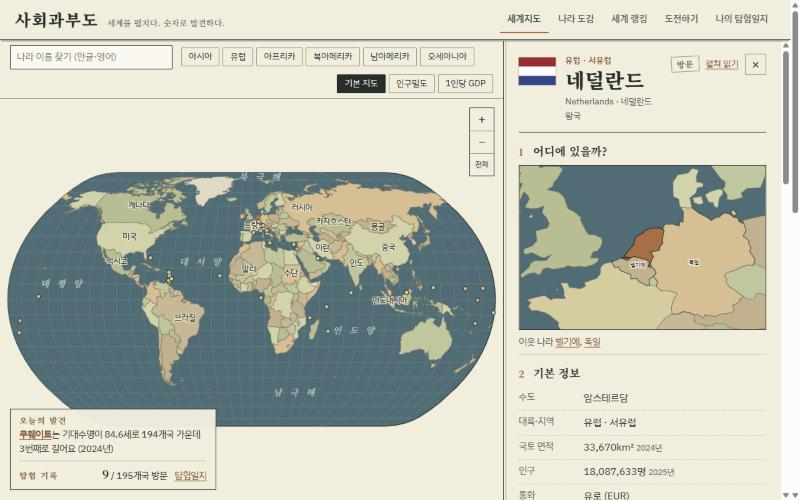
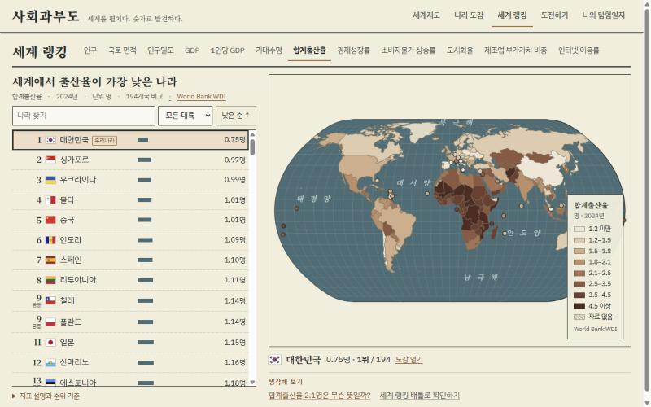
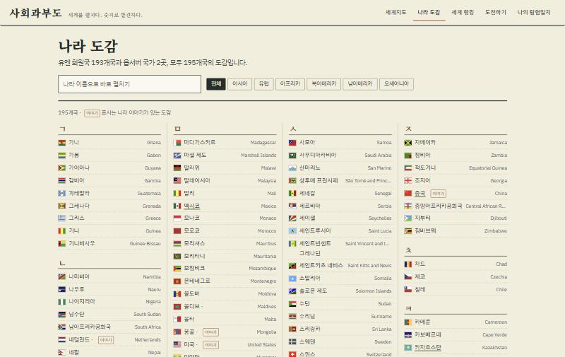

이런 서비스입니다
세계지도 위에서 나라를 찾아보고, 나라마다 도감 한 장을 펼쳐 위치와 기본 정보, 숫자, 세계 순위를 읽는 서비스입니다. 어느 나라가 얼마나 크고, 몇 명이 살고, 얼마나 버는지를 같은 기준으로 나란히 놓고 볼 수 있습니다.
읽는 데서 끝나지 않고, 도전하기에서 세계지도 챌린지와 세계 랭킹 배틀로 직접 확인합니다. 방문한 나라와 학습한 내용은 나의 탐험일지에 남습니다.
통계는 World Bank 자료이고, 순위는 한 기준연도의 값끼리만 매깁니다. 195개국은 유엔 회원국 193개국과 옵서버 2곳(교황청·팔레스타인)을 묶은 서비스의 편집상 기본 범위이며, 국가 지위에 대한 판단이 아닙니다.
이런 화면이 있습니다
기본 지도, 인구밀도, 1인당 GDP 세 가지 색으로 세계를 봅니다. 나라 이름(한글·영어)으로 찾거나 대륙 버튼으로 이동하고, 나라를 누르면 오른쪽에 도감 패널이 열립니다.
195개국을 대륙별·가나다순으로 찾아봅니다. 펼친 도감에는 위치, 기본 정보, 숫자, 순위, 이야기, 비교, 확인 문제가 들어 있습니다.
인구, 국토 면적, 인구밀도, GDP, 1인당 GDP, 경제성장률, 소비자물가 상승률, 합계출산율, 기대수명, 도시화율, 제조업 부가가치 비중, 인터넷 이용률 12개 지표를 목록과 지도로 봅니다. 대륙으로 거르고 높은 순·낮은 순을 바꿀 수 있습니다.
도전하기에서 지도 위에서 나라를 찾아 맞히는 챌린지와, 두 나라 중 어느 쪽 값이 더 높은지 고르는 랭킹 배틀을 할 수 있습니다. 답을 고르면 기준연도와 출처가 함께 나옵니다.
출산율이 2.1명은 무슨 뜻일까 같은 질문을 따라가며 지표를 읽는 탐구 노트 12개가 있습니다.
방문한 나라와 학습을 마친 노트를 기록합니다. 기록은 이 브라우저에만 저장됩니다.
화면 미리보기

나라를 누르면 도감이 열립니다

세계 랭킹: 목록과 지도로 함께 봅니다

세계 랭킹 배틀: 두 나라 중 더 높은 쪽 고르기

나라 도감: 대륙별·가나다순으로 찾아보기
자료와 순위 원칙
지도에는 국가 목록 밖 영역도 중립색으로만 그리고 정치적 설명은 붙이지 않습니다. 바티칸은 World Bank 통계가 없어 모든 지표에서 "자료 없음"입니다. 수도의 지위에 국제적 이견이 있는 이스라엘·팔레스타인은 원자료 표기를 그대로 두고 그 사실만 적습니다.
기술 및 제작 방식
개발 현황
누구나 바로 쓸 수 있는 MVP 0.1입니다. 탐험일지는 이 브라우저에만 저장됩니다.